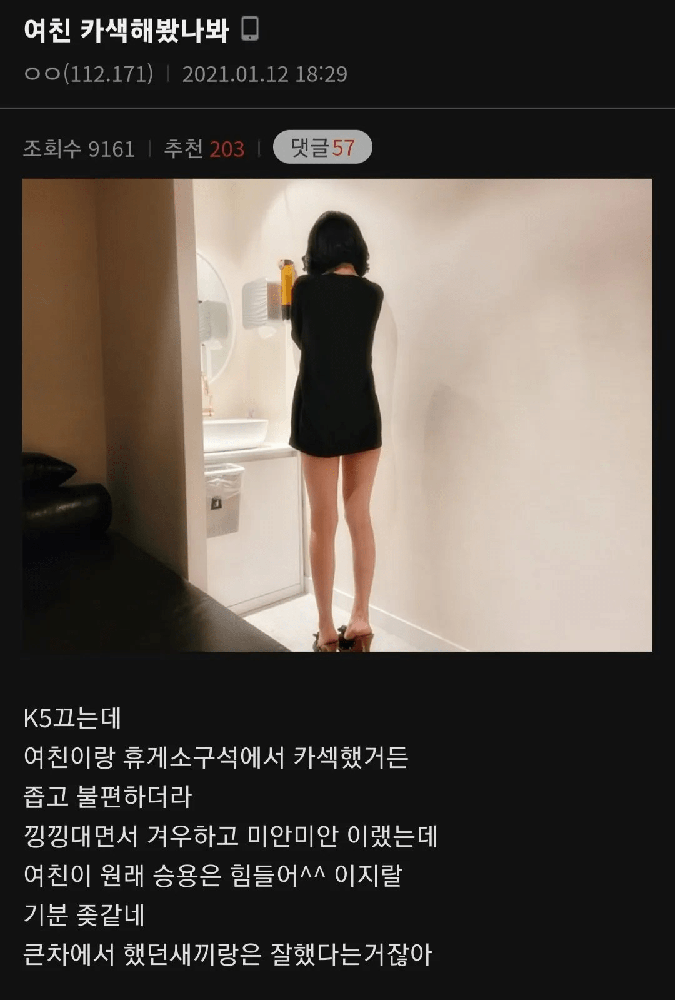

중고나라 뭔데 ㄷㄷ

결혼 전에 회사 봉고에서 하려고 각잡다가 언덕에서 차 굴러가서 죽을뻔 한 이후로 카섹 안해봄....
고임목 해놔야지
펠라입싸까진 해봄 그 이상은 엄두가 안 나던데
차 천장에 손자국은?
지칠공에서 하다가 허리 나갈 뻔했다 앞유리에 발자국 존나 생기고
사까시만 받아봄
소형차에서 하다좁아서 죽을뻔한뒤로 카섹은두번다시 안하는걸로
차에서 하면 습기 존나 참
작은 차, 큰 기쁨
트위지도 가능함
그래서 나는 항상 차에 물티슈 구비해 놓음.
그건 청소할때도 쓰는거라..
앞좌석운 별로야. 뒤가 좋지.
조수석에서 몸 잔뜩 구부리고 낑낑대지 마.
뒷좌석이 진리야
뒷자석에서는 할만함 ㅋㅋ조수석은 하다가 다리쥐난다 ㅋㅋㅋ
레이가 최고임
들킬 걱정없이 진짜 외진곳으로 장소 잘잡으면 오히려 선호하는 여자도 있음
178 162
Qm6 뒷자리에서 가능했다
15년식 쏘렌토 뒷자리 제껴놓으니 아주 넓더라
싼타페TM 별일 없으면 뒷좌석 다 내려놓고 돗자리 깔아놓는데 아주 편함
개붕이들 없는척하더니 다들
ㅋㅋㅋ절대 열지 말아야 할 썰들이 있거늘 ㅋㅋㅋㅋ
학교선배 운전석 조수석에 태우고 뒤에서 손가락으로 휘저어준적은 있음 1월1일날
남궁형을?
으 손톱에 누텔라...ㄷㄷ
넓이는 SUV 뒷자석 접고 이불깐게 젤 편하긴 한데,
의외로 투도어 4인승 스포츠카 (ex 쿠페나 카브리올레) 조수석도 생각보다 넓음 ㅋㅋ
조수석 뒤로 끝까지 밀고 등받이 내리면 공간도 확보되고 각도가 잘나온다고 해야하나...
좌석이 낮고 깊어서 누워있는 사람도 각도 좋고
차체가 낮아서 무릎대기 좋아 위에 있는 사람도 좋고 생각보다 애용했음
새단도 충분함. 조수석에서 여자 앉히고 그 위에서 하거나 뒷좌석 가운데 남자 앉고 여자가 위에서 등등
뒷좌석에 여자 눕히고 하면 가능은 한데 남자 무릎 쓸려서 끝나고 나면 따가움
처녀 만나라
모닝에서 해봄
SUV GOAT
20대 때나 카섹하지
나이먹으니까 굳이 차에서안하고싶음 ㅋㅋ 가끔입으로만
좁고 불편....하다고 함 친구의 친구네 회사 막내의 친구가.
근데 난 카섹은 안해봣네
아방이 트렁크에서해봄ㅅㄱ